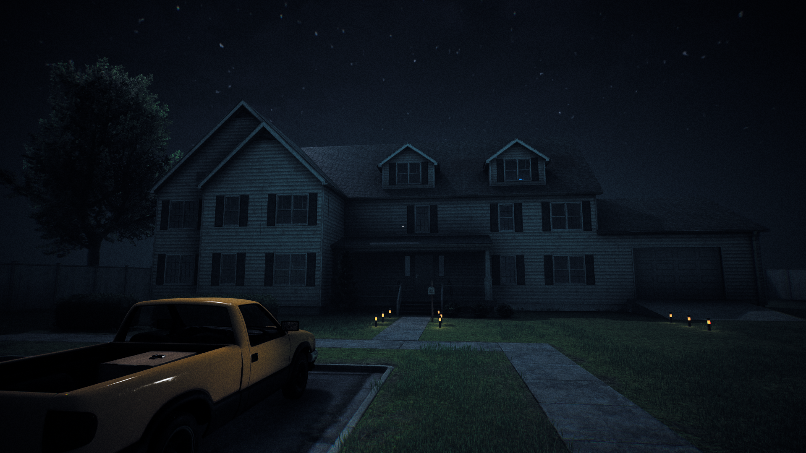
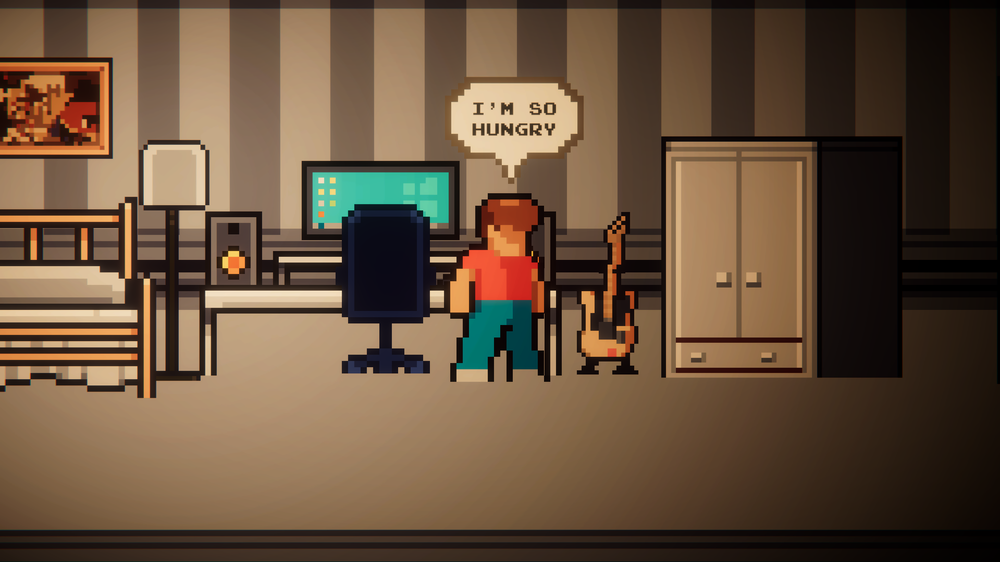

I create horror games!
I am a indie game developer that tries to create engaging and amazing experiences as games!
In this game you are a guy who decided to move out of the city and go somewhere far from where he's used to. When you get to your new house it seems a bit strange that it's so quiet out there, but you shrug it off because you're too excited to enter your new home. That's when strange things start happening.
A horror game about eating a snack late at night, or is it not? Discover by Playing the game!
Interested in collaborating or have any questions? Feel free to reach out!